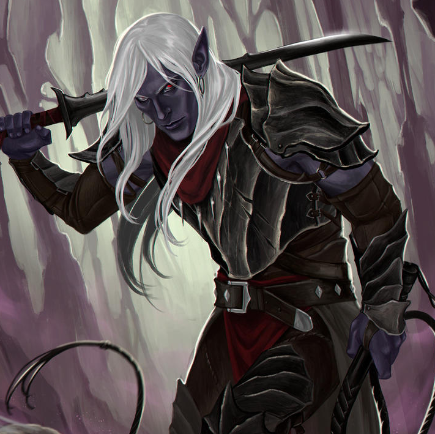

Playable Races > Drow
Elves are mystical humanoid creatures attuned to worldly spirits. They came from another world eons ago. Originally an immortal race of celestial protectors, they sacrificed their infinite lifespans to experience mortal joys like love and lust.
Drow, also known as Shadow Elves or formerly Ash Elves, are the remains of ancient prehistoric faction of progenitor Elves who tried to summon and enslave the Dragons. They were punished with genocide and enslavement, leaving them bitter and resentful. Culturally speaking, many of them consider it their duty to further their nation's entitled desire for vengeance, though not all of them submit to this mode of thinking.
Nocturnal Attunement: Drow can see in total darkness up to 30 feet.
Transcendence: Elves cannot be charmed or put to sleep, and may hide in plain sight.
Racials: +2 INT -1 STR +4 Bluff
Health: 1d7 health points per level.
Origin: The vast majority of Drow settled the underground cavern system that stretches under Western Karra, but occasionally wander east of the Whitebarrier seeking employment or chasing glory.